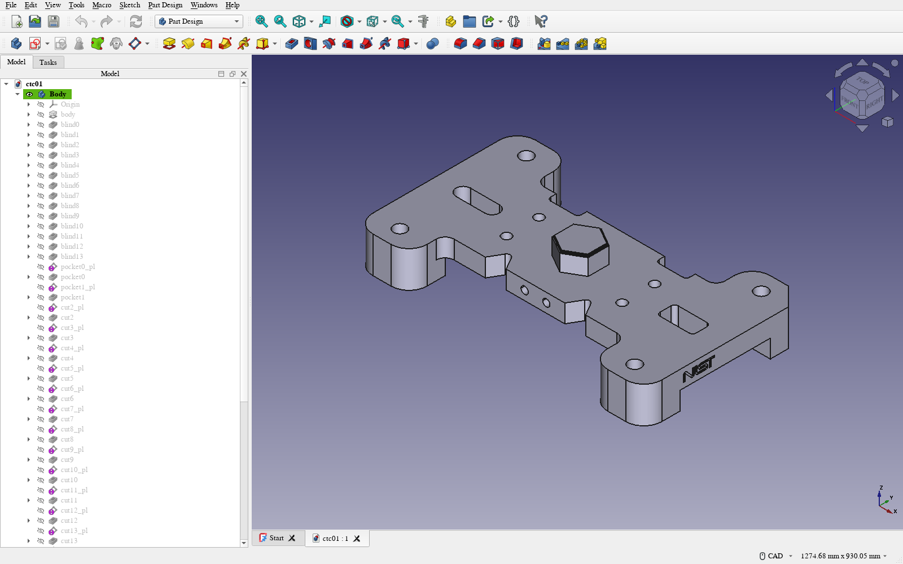

A STEP file imports into a parametric CAD system as one frozen lump. The design history is gone: no pad depth to change, no hole diameter to edit. featuretree recovers that history — sketches, pads, pockets, revolves — and gates every recovery by re-executing the recovered tree and comparing the result against the input. It answers VERIFIED, PARTIAL, or it refuses. The refusal matters more than the acceptance: a silently wrong feature tree is worse than no feature tree, because you would edit it.
Coverage: what we ran, and how much came back
We ran every distinct part geometry in the NIST MBE PMI test-case models: all five Combined Test Cases (CTC-01 to 05) and all six Fully-Toleranced Test Cases (FTC-06 to 11). We used NIST's "AP203 geometry only" exports, which are exact B-rep with no annotations. These are human-designed conformance parts, meant to be hard.
That is the whole geometry set rather than a sample. NIST's five Simplified Test Cases are, in its own words, the same geometry as the corresponding FTC with simpler PMI. We confirmed that for four of them by volume and extents; the fifth, STC-07, will not import in OpenCASCADE. The newer Hole Test Case (2024) and Modified Test Case (2018) models were not evaluated. Nor was the tessellated FTC-08 variant, which is faceted rather than exact geometry.
| Part | NIST set | Verdict | Features | Volume error | IoU |
|---|---|---|---|---|---|
| CTC-01 | Combined | VERIFIED | 54 | 0.14% | 99.8% |
| CTC-02 | Combined | PARTIAL | 64 | 62.2% | ≥ 4.0% |
| CTC-03 | Combined | PARTIAL | 16 | 41.5% | ≥ 6.5% |
| CTC-04 | Combined | PARTIAL | 270 | 2.43% | ≥ 25.0% |
| CTC-05 | Combined | PARTIAL | 106 | 51.8% | ≥ 8.2% |
| FTC-06 | Fully-toleranced | PARTIAL | 44 | 31.9% | ≥ 39.3% |
| FTC-07 | Fully-toleranced | PARTIAL | 52 | 63.4% | ≥ 30.3% |
| FTC-08 | Fully-toleranced | PARTIAL | 24 | 32.6% | ≥ 53.3% |
| FTC-09 | Fully-toleranced | VERIFIED | 80 | 0.19% | 99.7% |
| FTC-10 | Fully-toleranced | PARTIAL | 24 | 20.8% | ≥ 46.5% |
| FTC-11 | Fully-toleranced | VERIFIED | 2 | 0.00% | 100% |
- 11 of 11 parts yield an editable feature tree. None is refused.
- 3 of 11 are VERIFIED (one Combined, two Fully-Toleranced), each above 99.6% intersection-over-union with the input. FTC-11 is a two-feature revolve and should carry little weight.
- No incorrect tree was accepted. That is the property that makes the output safe to edit, and it holds on a measurement that uses no Boolean operations (more on why that matters below).
- The other 8 are PARTIAL: an editable tree for part of the geometry, labelled as such. We can put a floor under how much of each came back, from 4% to 53%, but not a ceiling. That is why the table says "≥".
IoU is estimated by classifying 60,000 random points against both solids. That needs no Boolean operations, and the 95% interval is within ±1.5 points on every row. A PARTIAL figure is a lower bound because we only search 24 axis-aligned orientations for the best overlap. Per-group, the Fully-Toleranced cases fare better than the Combined ones — two of six verified against one of five — but eleven parts is a demonstration of the contract, not a rate.

This is what VERIFIED means in practice. NIST CTC-01 is shown as a native FreeCAD Part Design document, built from the recovered tree. Every entry in the Model panel is a real, editable operation: the base extrude, fourteen blind holes, then pockets and cuts, each with its own placement sketch. Change a depth and the part rebuilds. FreeCAD's volume for this tree matches build123d's to within 0.3 mm³. Feature names are generated, not the designer's, because recognition recovers an equivalent history, not the history.
On this corpus the published version refused three of the eleven parts outright: CTC-02, FTC-07 and FTC-10. Those refusals looked principled, since those are the ugly parts, full of threads and blends. They were not. They came from two thresholds in the front end, and neither one had to be where it was.
What was actually blocking
The recogniser finds an extrude axis by counting how many faces are inconsistent with a prism swept along each candidate direction — angled walls, cross-holes, anything spherical or freeform. Axes with too many non-conforming faces were dropped. The threshold was 40% of faces.
FTC-07 and FTC-10 carry modelled thread and blend geometry. Their best axes score 55.0% and 47.7% non-conforming, and the offending faces are almost entirely tori, cones and spheres. They were rejected before their cross-section was ever looked at. The threshold was measuring the presence of thread geometry, not the absence of a prismatic profile.
CTC-02 failed differently. It passed the axis gate at 32.9%, then died on the next step, which required the cross-section at some sampled height to be one connected region. Every one of six sampled heights landed in a tapered region whose outline is ellipses and hyperbolas: the signature of slicing a cone off-axis.
The second fix was the other half of FTC-07. Along its best axis, its cross-section is two separate regions at every height, and "disjoint at every height" was being treated as a failure. A disjoint section does describe some parts correctly: several parallel prisms, which one sketch and pad per region recovers exactly. The IR could already express that; the recogniser never tried. But FTC-07 is not that part. It is an open-sided enclosure, and its two regions are its opposing side walls. The multi-region path recovers those two walls and nothing that joins them. The verifier reports that as PARTIAL, 63% short on volume, which is the right call. For FTC-07 the change bought a labelled partial tree, not a good one. We only noticed because we rendered it.
Why loosening a threshold was safe
The axis threshold is a recall knob, not a correctness knob. That follows from the architecture; it is not something we observed. Verification sits downstream of axis selection and is independent of it: the recovered tree is re-executed and compared to the input no matter which axis produced it. So loosening the gate can only move a part from REFUSED to PARTIAL or VERIFIED. It cannot create a false accept, because the stage that decides acceptance never sees the threshold. We moved the gate from 40% to 75% and added the multi-region path.
| Before | After | |
|---|---|---|
| VERIFIED | 3 | 3 |
| PARTIAL | 5 | 8 |
| REFUSED | 3 | 0 |
| FTC-08 volume error | 52.6% | 32.6% |
No false accept appeared, and CTC-01's recovery got slightly tighter. FTC-08, which was already recovering, improved by twenty points because the wider gate let a better axis win. Refusal is still reachable (a torus is still refused); this corpus just doesn't exercise it.
![Three rows, original STEP in grey on the left and recovered tree in teal on the right, each pair drawn in the same registration. CTC-01: the recovery is visually identical to the original, VERIFIED, IoU 99.8 percent. FTC-10: a flanged plate with a recessed pocket; the recovery reproduces the main plate and its row of holes but not the flange ears or pocket detail, PARTIAL, IoU at least 46 percent. FTC-07: an open-sided box enclosure; the recovery is only two flat plates, the enclosure's opposing walls, PARTIAL, IoU at least 30 percent.](recovered-parts.png)
Three recoveries, each drawn in the registration its IoU number comes from. CTC-01 comes back whole. FTC-10 comes back as its main plate without the flange ears or pocket detail. FTC-07 comes back as two walls of a box. The verdicts say exactly that. The picture is here because a PARTIAL tree is still an editable starting point, and it should be obvious how far from finished it is.
The measurement code was less trustworthy than the recogniser
Every bug in this section was in the evaluation, not in featuretree, and one of them shipped. Extending the IoU harness to score failed recoveries — previously they had no IoU at all — broke it in turn:
- One bad boolean killed a whole part. OpenCASCADE threw
Null TopoDS_Shapeon one of 24 orientations and took the other 23 with it. - A hard crash returned nothing. One orientation segfaulted OCCT, which no
try/exceptcatches. The worker now streams its best-so-far to disk. - An impossible IoU of 50,133%. A degenerate union came back smaller than its own operands. We added a gate: a sound union contains both inputs, so
U ≥ max(A,B). - Half a recovery. A helper took the first solid of each reconstruction, so the multi-region parts were scored on one wall. The rendering above caught it: FTC-07 drew as a single plate.
The last one is the uncomfortable one. When the renders were first drawn, FTC-10's recovery sat at right angles to its original even though its caption said 74% overlap. At that rotation the two parts' bounding boxes barely intersect, and recomputing it gave 1.3%. OpenCASCADE had returned a union that was wrong but plausible. It passed the U ≥ max(A,B) gate and went into the published v2 preprint. On CTC-03 the error has a clean signature: the "union" came back equal to the larger operand, so IoU collapsed to the ratio of the two volumes, and the gate passes with equality. No range check catches a number like that.
So every IoU was re-measured with no Boolean operations at all, by classifying sampled points. The three VERIFIED figures held, as they should for near-identical solids. Four of the eight PARTIAL figures were wrong: CTC-03 had been reported at 58.5% and is 6.5%, and FTC-10 at 74.4% is 46.5%. The table at the top is the Boolean-free one. The takeaway is narrower than "never use Booleans," but it is sharp. A Boolean-derived metric is safe to report only where something independent has confirmed it, and it is least safe on the recoveries that failed, which are exactly the ones you are trying to measure.
Two more corrections
A headline number went stale, and nothing looked wrong. The first preprint reported that on CTC-01, over-cut and uncut material partly cancel in the volume check, understating the true error by 1.56×. After the recogniser change the same decomposition gives 1.01×: the new recovery is almost all over-cut (20,397 mm³ against 62 mm³). The old figure was in the abstract and two READMEs, and a front-end change aimed elsewhere moved it by half its own value. We kept both numbers in the paper, because the swing is the better argument. Nothing in a volume criterion bounds that error term.
And a claim was withdrawn. A draft said one part — 2.43% off on volume — overlaps its target by "no more than 25%". That is backwards. A best-of-24-orientations IoU is a lower bound: it can certify that a recovery is largely right, never that it is poor. The argument now rests on a fact that needs no bound: no orientation of that reconstruction matches the input's bounding-box extents to within 0.05 mm. Agreeing to 97.6% on volume says nothing about agreeing to 97.6% on shape.
What this says about verified generation
The interesting result is not the zero. Three refusals turned out to be a threshold wearing a principle's clothes. "Outside the feature vocabulary" and "prefilter tuned conservatively" produce the same output and look identical from outside. Telling them apart meant instrumenting the refusal path and asking, part by part, which line raised.
The architecture made the fix cheap and safe. Acceptance is a separate stage that re-runs the recovered program and compares geometry, so the front end can be as aggressive as you like, and the worst case is wasted compute. If recognition and acceptance had been one scoring function, which is the natural way to write it, every threshold change would have been a soundness change.
The same separation is what the evaluation was missing. The recogniser's own verdicts were right all along. It was the harness scoring them that trusted an unchecked Boolean, and a picture was what caught it.
Code is at punkfab/featuretree, MIT. The paper, with the prior-art scan behind its deliberate lack of a novelty claim, is at 10.5281/zenodo.22848792. Every number and image here regenerates from the commands in paper/figures/README.md.